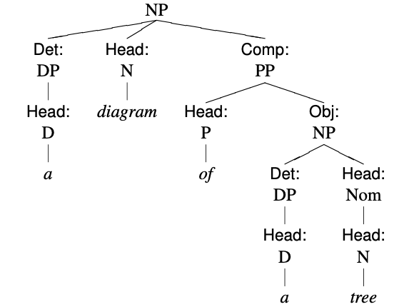
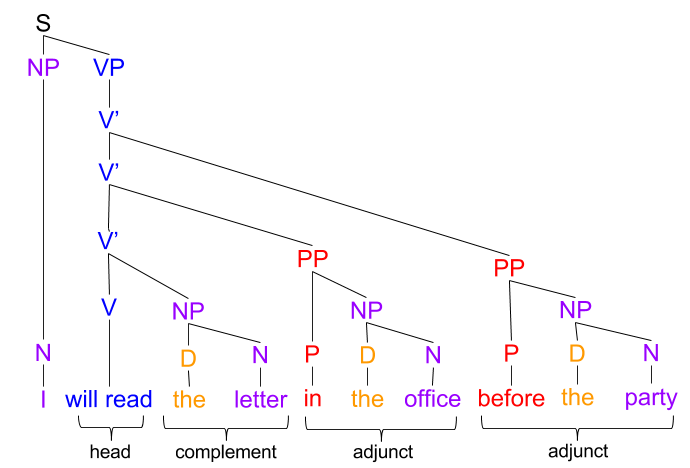
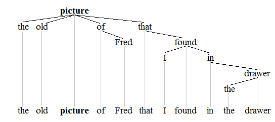
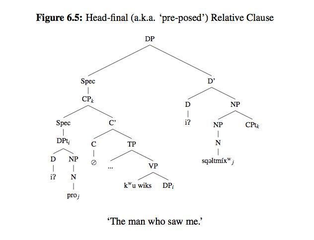

Syntax trees
Functions: Heads and dependents
At the most basic level, the functions can be split into heads and dependents. Dependents depend on a head. When we draw trees, we will be more specific about the various types of dependents (subjects, determiner, modifiers, etc.), but to start with, we'll just call anything that isn't a head a dependent.
Why syntax trees?
Syntax trees are a visual representation of the relations between words and phrases in larger constructions. They are common in linguistics, but they are rarely used in language teaching. To be clear, we are not employing trees in this course so that you can employ trees in your teaching. While a particularly academically oriented student may find trees useful in understanding the structure of sentences, the level of detail involved is generally not a level that students need.
So, why employ trees?
- Better learning through dual-encoding: As I said, syntax trees provide a visual representation of the relations between words and phrases in larger constructions. There is good evidence that multi-modal learning is more effective than learning that takes place in a single modality (Ginns, 2005). Therefore, it is likely that by employing syntax trees, you will learn the syntax better than if I simply described the syntax to you.
- Brevity and clarity: It would take a paragraph or more to describe the information set out in a simple syntax tree, and the explanation would be much harder to understand.
- Explicitness: When you draw a tree, you take an explicit position on the categories of words and phrases, along with their functional relationships. This is much more difficult in prose, which means that prose descriptions tend to be vague. As a result, it's much easier in prose to fool yourself into thinking that you've understood when you haven't. With trees, it is obvious when the analysis is correct.
- Practice with explicit feedback: There is very strong evidence that mastery is achieved through deliberate practice (Ericsson, Drampe, & Tesch-Römer, 1993). Deliberate learning will be addressed in the vocabulary module, but, simply put, it involves an attempt → explicit feedback → reflection → attempt cycle. Employing trees allows you to easily get quick, accurate feedback by comparing trees to the answer key.
In short, we are employing trees because they are an extremely effective tool for learning syntax and for demonstrating that learning.
References
Ericsson, K. A., Krampe, R. T., & Tesch-Römer, C. (1993). The Role of Deliberate Practice in the Acquisition of Expert Performance. Psychological Review, 100(3), 363–406. https://doi.org/10.1037/0033-295X.100.3.363
Ginns, Paul. 2005. Meta-analysis of the modality effect. Learning and Instruction, 15(4). 313–331. https://doi.org/10.1016/j.learninstruc.2005.07.001.
Checking your trees
When you draw a tree, you should complete the following seven checks.
- The very top label is a phrasal category (e.g., Clause, VP, NP, etc.) with no function.
- No matter how many branches go down from that label, one and only one is labeled Head.
- At the very bottom of each branch, there is a single word (e.g., jump, ball, the, etc.).
- If you trace that branch up from that word, you run into a label that says Head:X.
- That X a lexical category (e.g., N, V, Adj, D, etc.), not a phrasal category.
- If you continue up that branch, the next label is [Function]:XP (e.g., Subj:NP, Mod:AdvP, Head:VP, etc.).
- This is true all the way up until the very top label, which doesn't include a function (see 1.).

Marking specific dependents and checking trees
A simple tree from the top down
Another simple tree from the bottom up
Tree styles
The style of syntax tree we're using is a simplified version of the trees used in The Cambridge Grammar of the English Language, but there are many different ways to draw syntax trees. Some look like this.

Some look like this

And some look like this (To be fair, this is not an English tree.):

Because of this variety, I do not recommend looking around the internet for videos about how to draw trees. Whatever you find is more likely to confuse you than to help. If you need help then, post a question in the discussion forums, ask a classmate, or email Brett.
Some practice